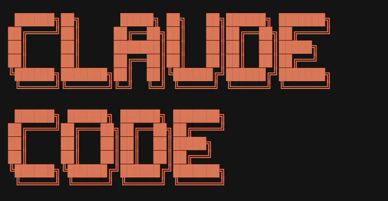

Imersão Claude Code — 2026.1

Apresentação
A Imersão Claude Code para Economistas, Administradores e Contadores é um curso de cinco encontros (26/05 a 23/06 de 2026) que parte do zero — muitos alunos nunca abriram um terminal — e chega à construção de um agente em produção.
O fio condutor é a replicação do Digest do Boletim AM: um agente real que coleta newsletters por e-mail (IMAP), sintetiza o conteúdo com Claude Opus 4.7 e entrega um PDF semanal no WhatsApp, tudo orquestrado por GitHub Actions. Em vez de exemplos artificiais, o aluno reconstrói um pipeline que já roda na nuvem.
O objetivo não é virar programador, mas aprender a delegar trabalho a um agente — descrever o que se quer, revisar o que ele faz e colocar o resultado em produção.
Calendário
| Encontro | Data | Foco |
|---|---|---|
| Aula 1 | 26/05/2026 | Fundamentos, anatomia do Claude Code e setup |
| Monitoria | 29/05/2026 | Tira-dúvidas de instalação |
| Aula 2 | 02/06/2026 | Demonstração do Digest ao vivo + setup completo |
| Aula 3 | 09/06/2026 | Construção do projeto |
| Aula 4 | 16/06/2026 | Pipeline e automação |
| Aula 5 | 23/06/2026 | Produção e próximos passos |
Stack de referência
A stack do curso espelha exatamente a do Digest em produção — replicar o ambiente da nuvem evita o clássico “funciona na minha máquina, quebra no servidor”:
- Python 3.12 (mesma versão do GitHub Actions);
- Node 20+ (runtime que a extensão Claude Code usa por baixo);
- Claude Opus 4.7 com
thinking={"type": "adaptive"}eeffort: high, viaclient.messages.stream(...); - Bibliotecas:
imap_tools>=1.7,beautifulsoup4>=4.12,anthropic>=0.40,python-dotenv>=1.0,python-dateutil>=2.9; - Credenciais sempre em
.env(nunca no código), com.envno.gitignore.
Aula 01 — Fundamentos, anatomia e setup
26 de maio de 2026
Primeiro contato com o ferramental e instalação do ambiente em qualquer sistema operacional.
- Fundamentos rápidos — o que são LLMs, noções de prompting e como Claude se compara a GPT e Gemini;
- Anatomia do Claude Code — o loop agêntico, tools, janela de contexto e escolha de modelos;
- Setup ao vivo — passo a passo para macOS, Windows e Linux: Python 3.12, Node 20+, Git, VS Code, a extensão Claude Code, ambiente virtual (
.venv) e dependências do Digest; - Demonstração do Digest — visão geral do pipeline real em produção;
- Plano B — quem se assusta com o terminal pode delegar a própria instalação ao agente.
Aula 02 — O Digest ao vivo e setup completo
2 de junho de 2026
Demonstração do agente em funcionamento e finalização do ambiente de cada aluno, para que todos sigam a partir da mesma base.
Aula 03 — Construção do projeto
9 de junho de 2026
Mãos à obra: começar a montar, com o Claude Code, as peças do agente — leitura de e-mails via imap_tools (sempre com mark_seen=False), limpeza do HTML e estruturação do conteúdo.
Aula 04 — Pipeline e automação
16 de junho de 2026
Síntese com Claude Opus, geração do entregável e orquestração do fluxo de ponta a ponta.
Aula 05 — Produção e próximos passos
23 de junho de 2026
Colocar o agente para rodar sozinho na nuvem via GitHub Actions, boas práticas de credenciais e segredos, e os caminhos para evoluir o projeto depois do curso.
Materiais
- Índice da imersão: https://analisemacro.github.io/imersao-claude-code/
- Aula 01 (26/05): https://analisemacro.github.io/imersao-claude-code/aula01-26052026.html
- Aula 02 (02/06): https://analisemacro.github.io/imersao-claude-code/aula02-02062026.html
As Aulas 03–05 entram como páginas próprias no site da imersão, sem alterar as URLs das anteriores.